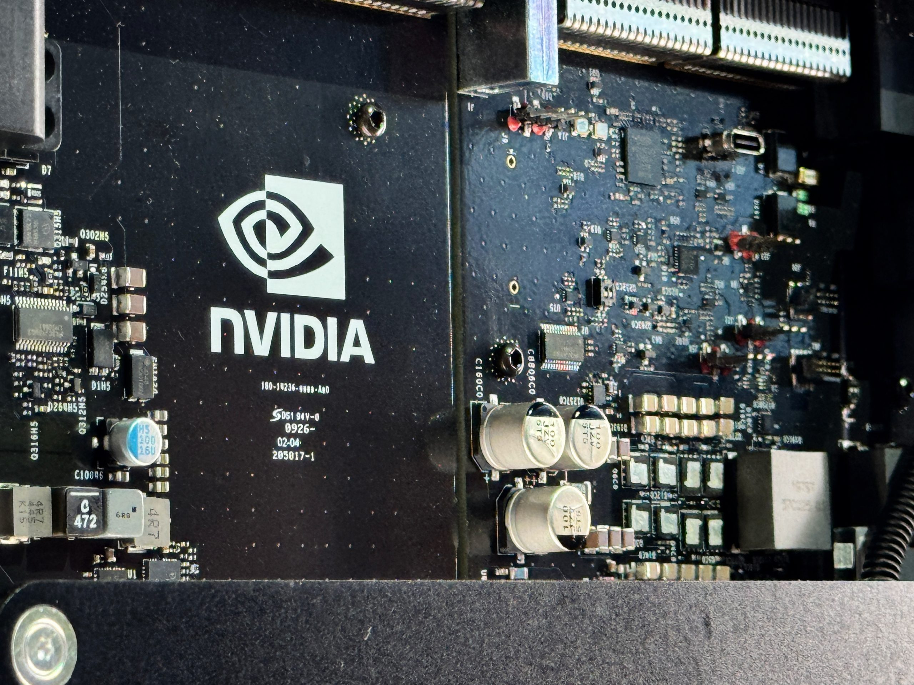
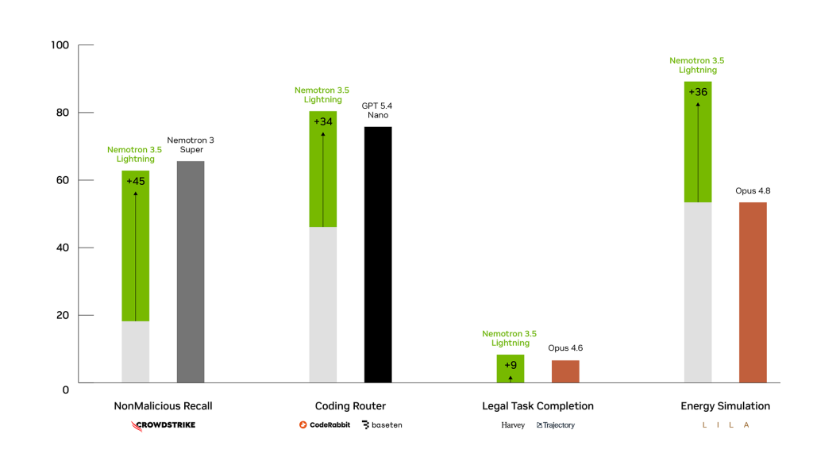

10 The New Stack 게시일 2026.08.11
Nvidia, 30B Nemotron과 라우터 동시 투입

Nvidia가 오픈 모델과 라우팅 도구를 한날에 내놨다. 새 모델은 Nemotron 3.5 Lightning이다. 새 도구는 NeMo Switchyard다. Nvidia는 한 개의 큰 모델보다 여러 모델을 조합해 쓰는 운영 방식을 전면에 내세웠다.
핵심 브리핑
Nvidia는 Nemotron 3.5 Lightning과 NeMo Switchyard를 공개했다. Nemotron 3.5 Lightning은 30-billion-parameter Mixture-of-Experts 모델이다. Nvidia는 이 모델이 속도와 post-training에 초점을 맞췄다고 설명했다. NeMo Switchyard는 에이전트 워크로드를 단계별로 알맞은 모델에 보내는 오픈소스 라우팅 라이브러리다.
Nvidia는 Lightning이 더 큰 Nemotron 3 Super에 가까운 추론 능력을 낸다고 밝혔다. 다만 같은 크기대의 Google Gemma 4 31B와 비교하면 Artificial Analysis의 Intelligence Index에서는 뒤진다고 소개됐다. Nvidia는 벤치마크보다 속도와 업무 맞춤 조정이 더 중요하다고 강조했다. Lightning은 최대 4x 빠른 출력 속도를 낼 수 있다고 Nvidia는 말했다.
Nvidia는 기업 고객에게 Lightning 조기 접근 권한을 줬다. 고객은 특화 워크플로에 맞춰 모델을 post-training했다. Nvidia는 이 과정이 정확도를 크게 높였다고 주장했다. CrowdStrike, CodeRabbit 등과의 작업에서는 미세 조정한 오픈 모델이 더 큰 비공개 모델과 비슷하거나 더 나은 성능을 보인 경우가 있었다.
Switchyard는 Rust로 작성됐다. 개발자는 API로 이 도구를 붙인다. 모델 풀과 라우팅 기준, 정책은 개발자가 직접 정한다. 품질, 지연시간, 비용에 맞춰 알고리즘을 조정할 수 있다. Kong, OpenRouter, LiteLLM 같은 기존 라우터와 AI 게이트웨이도 통합 작업을 진행 중이다.
Nvidia는 코딩 에이전트 학습용 agentic reinforcement learning 데이터셋도 함께 제공한다고 밝혔다. Nemotron 3.5 Lightning은 Hugging Face, ModelScope, OpenRouter, build.nvidia.com에서 쓸 수 있다. Nvidia NIM microservice 형태로도 제공한다. NeMo Switchyard는 GitHub에서 배포한다.


도입 가치
이번 발표의 핵심은 작은 모델 하나가 아니다. Nvidia는 큰 모델이 계획을 세우고, 작은 모델이 실행을 맡는 구조를 제시했다. 비용이 큰 프런티어 모델 호출을 줄이고, 업무에 맞춘 소형 모델 활용을 늘리려는 설계다.
Switchyard는 기존 스택에 넣기 쉽게 API 방식을 택했다. Kong, OpenRouter, LiteLLM 같은 도구가 이미 통합 중이라는 점도 도입 장벽을 낮춘다. 라우팅 정책을 업무별로 조정할 수 있다는 점은 엔터프라이즈 운영에 직접 닿는다.
수치상 효과도 제시됐다. Nvidia 내부 벤치마크에서는 몇 개의 오픈 모델과 Anthropic Opus 4.8을 섞은 시스템이 프런티어급 정확도를 유지하면서 작업 완료 비용을 Opus 단독 대비 roughly a third로 낮췄다. 초기 파트너 수치도 비슷한 방향을 보였다.
| 사례 | 비교 방식 | 비용 변화 | 정확도 변화 | 기타 |
|---|---|---|---|---|
| Nvidia 내부 벤치마크 | 오픈 모델 몇 개 + Anthropic Opus 4.8 vs Opus 단독 | roughly a third | 프런티어급 정확도 유지 | - |
| LangChain | 145 multi-turn Deep Agents tasks | 74% lower costs | 6% accuracy tradeoff | frontier model로 보낸 호출 7% |
| Ramp | internal SWE-Bench | 58% cost reduction | frontier model과 성능 일치 | runtime 33% 감소 |
업계의 움직임
Nvidia는 CrowdStrike, CodeRabbit와 함께 특화 업무 post-training 사례를 제시했다. LangChain과 Ramp도 초기 수치를 공개했다. Kong, OpenRouter, LiteLLM은 Switchyard 통합을 진행 중이다. 관련 보도는 한 모델 경쟁보다 라우터 계층에 더 주목했다.
시사점과 체크포인트
우리 회사가 생성형 AI를 업무에 붙일 때, 비용 통제는 이제 모델 선택표만으로 끝나지 않을 수 있다. 어떤 단계에 어떤 모델을 보낼지 정하는 라우팅 정책이 운영 성능을 크게 바꿀 수 있다.
검토할 질문은 구체적이다.
- 어떤 업무를 계획 단계와 실행 단계로 나눌 수 있는가
- 정확도 손실을 허용할 수 있는 업무와 없는 업무는 무엇인가
- 사내 AI 게이트웨이나 API 관리 계층에 라우터를 넣을 수 있는가
- post-training용 내부 데이터와 평가 기준을 확보했는가
리스크도 있다. LangChain 사례는 비용을 74% 낮췄지만 정확도는 6% 줄었다. 금융 업무는 작은 정확도 차이도 민감할 수 있다. 사내 파일럿에서는 고객 응대, 코드 보조, 문서 분류처럼 위험도가 다른 업무를 나눠 평가하는 편이 낫다.
주요 용어
원문 정보
제목: Nvidia launches a smaller, faster Nemotron model and a router to put it to work
게시일: 2026.08.11
출처 URL: https://thenewstack.io/nvidia-nemotron-lightning-switchyard/